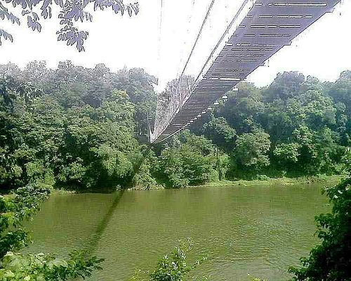

Etymology. The word Malappuram means "terraced place atop the hills" or simply "hilltop", derived from the general geographical characteristics of the city.
Malappuram is the head quarters of the district. In earlier times, Malappuram was the head quarters of European and British troops and later it became the head quarters of the Malabar Special Police (M.S.P). This place has still the ruins of an ancient fort built by Tippu Sultan.
Malappuram has made numerous contributions to the cultural heritage of Kerala. A famous centre for Hindu-Vedic learning and Islamic philosophy, the temples and mosques of this region are well known for their spectacular festivals.
The current metro area population of Malappuram in 2022 is 3,816,000, a 5.74% increase from 2021. The metro area population of Malappuram in 2021 was 3,609,000, a 6.43% increase from 2020. The metro area population of Malappuram in 2020 was 3,391,000, a 7.01% increase from 2019.
Must visit places in Malappuram

Teak Museum is located 4 km from Nilambur, a town in the Malappuram district of Kerala, South India. Teak occurs naturally in India with the main teak forests found in Kerala. In the old administrative records of the Madras Presidency, it is recorded that the most remarkable plantation owned by Government in the erstwhile Madras Presidency was the Teak plantation at Nilambur planted in 1844.
Read MoreArimbra Hills or Mini Ooty is a tourist spot between Malappuram and Kondotty in Malappuram district, Kerala, India. It is at a height of 445 meter above sea level. The place attracts large number of visitors for its rolling hills and scenic views. The location got the nickname as it resembles Ooty, one of the famous hill stations in India. There are many stone crushers and plantations atop the hill. There is an old Harijan Colony on the western side of the hill
Read MoreKodikuthimala, also known as the Ooty of Malappuram,[1] is a hill station in Vettathur and Thazhekode villages, in Kerala, India. At a height of 540 metres (1,770 ft) above sea level, it is the highest peak in Amminikkadan hills.
Read More
Thirumandhamkunnu Temple is a historically significant Hindu temple in Angadipuram, which was the capital of Valluvanad Rajavamsham, in Malappuram district, Kerala state, South India.[1] The temple deity, Thirumandhamkunnil amma, was the paradevatha (official goddess) of the kings of Valluvanad, the local feudal kings ruled the area in the Middle Ages. The Nair warriors (called Chavers, literally "martyrs") of Valluvanad king set out from this temple to Thirunavaya, to participate in the famous Mamankam festival. A memorial structure called the chaver thara ("platform of the martyrs") can be found in front of the main entrance of the Thirumanthamkunnu Temple
Read More